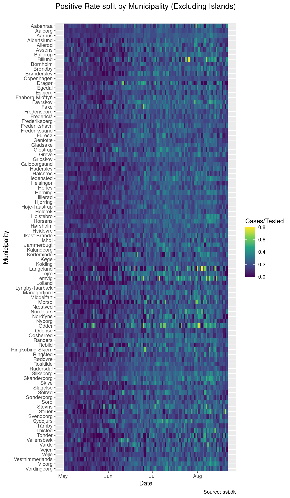
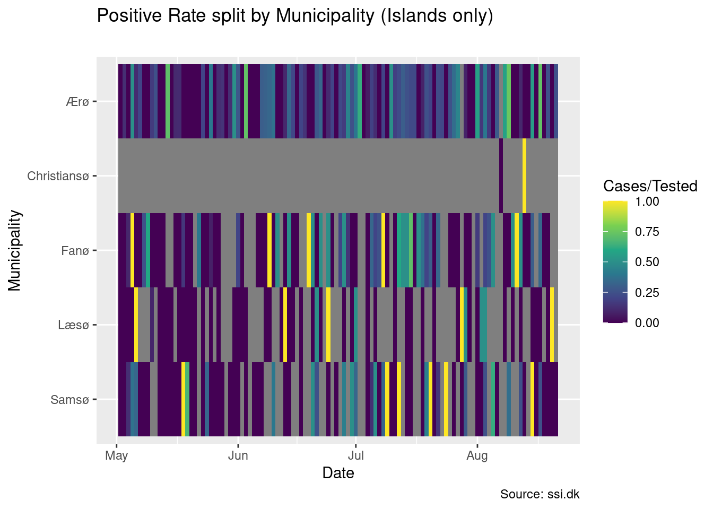
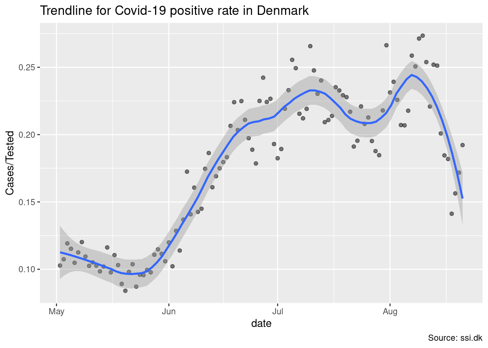
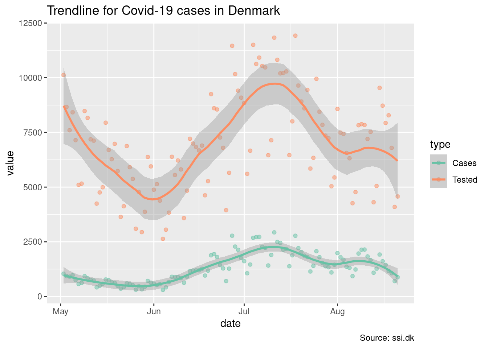
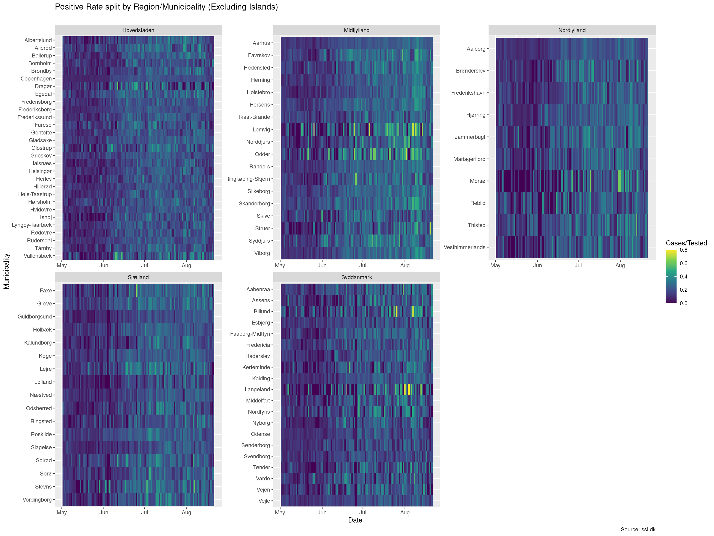

This file provides the new development of Covid-19 stats. Where the original development took its data from the SSI Covid-19 Dashboard, this takes data in the form of the “raw” core data.
One early important part of the process is to define a date range of interest. The current variant we are interested in is Omicron, so, we can focus on recent data, rather than the full period:
low_cutoff <- "2021-12-01"Likewise, some files contain a date at which they were produced. For instance the estimation of Rt:
rt_date <- "2022_02_01"The R site we are creating here uses a separate devleopment, core.R to read in and handle core data. This document then references into the core R development when needed for different code chunks. This allows us for easy scripting and exploration in the R session while also neatly handling dissemination in a document like this.
We first need a couple of libraries
library(tidyverse)
library(lubridate)Where the Dashboard data is stored in ISO8859-1 format, the core data is already in UTF-8. So they are way easier to read. We can just point tidyverse’s readr package directly to the data at hand. Start by setting up a core path
path <- "./data/core"Read in the Rt case estimation data
rt_cases_path <- sprintf("%s/Rt_cases_%s.csv", path, rt_date)
rt_cases <- readr::read_csv2(rt_cases_path)
rt_cases## # A tibble: 668 × 4
## SampleDate estimate uncertainty_lower uncertainty_upper
## <date> <dbl> <dbl> <dbl>
## 1 2020-03-26 0.9 0.6 1.1
## 2 2020-03-27 0.9 0.6 1.1
## 3 2020-03-28 0.8 0.6 1
## 4 2020-03-29 0.8 0.6 1
## 5 2020-03-30 0.8 0.6 1
## 6 2020-03-31 0.8 0.6 1
## 7 2020-04-01 0.8 0.6 1
## 8 2020-04-02 0.8 0.6 0.9
## 9 2020-04-03 0.8 0.6 1
## 10 2020-04-04 0.8 0.6 1
## # … with 658 more rowsThis data is easily read:
m_cases_timeseries_path <- sprintf("%s/Municipality_cases_time_series.csv", path)
m_cases_timeseries <- readr::read_csv2(m_cases_timeseries_path)
m_cases_timeseries## # A tibble: 716 × 101
## SampleDate Roskilde Copenhagen Aarhus Frederiksberg Kalundborg Middelfart
## <date> <dbl> <dbl> <dbl> <dbl> <dbl> <dbl>
## 1 2020-02-26 1 0 0 0 0 0
## 2 2020-02-27 0 1 0 0 0 0
## 3 2020-02-28 0 0 1 0 0 0
## 4 2020-03-01 0 1 0 0 0 0
## 5 2020-03-02 0 1 0 1 1 1
## 6 2020-03-03 0 4 0 0 0 0
## 7 2020-03-04 0 1 0 0 0 0
## 8 2020-03-05 0 2 0 2 0 0
## 9 2020-03-06 0 0 0 0 0 0
## 10 2020-03-07 0 1 1 1 0 0
## # … with 706 more rows, and 94 more variables: Gentofte <dbl>, Solrød <dbl>,
## # Allerød <dbl>, Dragør <dbl>, Helsingør <dbl>, Hillerød <dbl>,
## # Rudersdal <dbl>, Næstved <dbl>, Aalborg <dbl>, Vallensbæk <dbl>,
## # Esbjerg <dbl>, Favrskov <dbl>, Frederikssund <dbl>, Furesø <dbl>,
## # Greve <dbl>, Holbæk <dbl>, Kolding <dbl>, Odense <dbl>, Silkeborg <dbl>,
## # Skanderborg <dbl>, Vejle <dbl>, Aabenraa <dbl>, Ballerup <dbl>,
## # Egedal <dbl>, Faxe <dbl>, Fredericia <dbl>, Faaborg-Midtfyn <dbl>, …However, as we see, the data is messy and not tidy. To make the data set tidy, we want to bring it on essentially 3rd normal form:
m_cases_timeseries <- m_cases_timeseries %>%
pivot_longer(cols = -c(`SampleDate`), names_to="Municipality", values_to="Cases") %>%
rename(date = `SampleDate`)
m_cases_timeseries## # A tibble: 71,600 × 3
## date Municipality Cases
## <date> <chr> <dbl>
## 1 2020-02-26 Roskilde 1
## 2 2020-02-26 Copenhagen 0
## 3 2020-02-26 Aarhus 0
## 4 2020-02-26 Frederiksberg 0
## 5 2020-02-26 Kalundborg 0
## 6 2020-02-26 Middelfart 0
## 7 2020-02-26 Gentofte 0
## 8 2020-02-26 Solrød 0
## 9 2020-02-26 Allerød 0
## 10 2020-02-26 Dragør 0
## # … with 71,590 more rowsWe use the same strategy for the tests:
m_tested_timeseries_path <- sprintf("%s/Municipality_tested_persons_time_series.csv", path)
m_tested_timeseries <- readr::read_csv2(m_tested_timeseries_path)
m_tested_timeseries <- m_tested_timeseries %>%
pivot_longer(cols = -c(`PrDate_adjusted`), names_to="Municipality", values_to="Tested") %>%
rename(date = `PrDate_adjusted`)Since these two tibbles are storing the same data, we can join them:
municipality <- m_cases_timeseries %>% left_join(m_tested_timeseries, by = c("date", "Municipality"))
municipality <- municipality %>% mutate(Municipality = factor(Municipality))
municipality## # A tibble: 71,600 × 4
## date Municipality Cases Tested
## <date> <fct> <dbl> <dbl>
## 1 2020-02-26 Roskilde 1 3
## 2 2020-02-26 Copenhagen 0 4
## 3 2020-02-26 Aarhus 0 2
## 4 2020-02-26 Frederiksberg 0 1
## 5 2020-02-26 Kalundborg 0 0
## 6 2020-02-26 Middelfart 0 0
## 7 2020-02-26 Gentofte 0 0
## 8 2020-02-26 Solrød 0 0
## 9 2020-02-26 Allerød 0 0
## 10 2020-02-26 Dragør 0 0
## # … with 71,590 more rowsGenerally, the most recent observations in the data sets are flawed. Their counts tend to increase over time as data is reported into the central register. Hence, it is wise to cut these data from the data set and look at the remaining data instead.
high_cutoff <- max(municipality$date) - days(2)Furthermore, the we have few observations from island-data. Because of this, it is wise to filter them out, so we can get a better picture of the remaining municipalities. Split off these data sets into their own:
islands <- c("Christiansø", "Fanø", "Læsø", "Samsø")
municipality_islands <- municipality %>% filter(Municipality %in% islands)
municipality_ml <- municipality %>% filter(!Municipality %in% islands)Plot for the “mainland”
p <- ggplot(municipality_ml %>% filter(date > low_cutoff, date <= high_cutoff, Municipality != 'NA'),
aes(date, forcats::fct_rev(Municipality), fill=Cases/Tested))
p + geom_tile() +
scale_fill_continuous(type = "viridis") +
labs(title = "Positive Rate split by Municipality (Excluding Islands)",
subtitle = "Christmas contributes to positive rate",
caption = "Source: ssi.dk",
x="Date",
y = "Municipality")
Plot for the islands
p <- ggplot(municipality_islands %>% filter(date > low_cutoff, date <= high_cutoff, Municipality != 'NA'),
aes(date, forcats::fct_rev(Municipality), fill=Cases/Tested))
p + geom_tile() +
scale_fill_continuous(type = "viridis") +
labs(title = "Positive Rate split by Municipality (Islands only)",
subtitle = "Christmas contributes to positive rate",
caption = "Source: ssi.dk",
x="Date",
y = "Municipality")
Country-wide tests, cases, positive-rate
m_summary <- municipality %>% group_by(date) %>% summarize(Cases = sum(Cases), Tested = sum(Tested))
p <- ggplot(m_summary %>% filter(date > low_cutoff, date <= high_cutoff), aes(x=date, y=Cases/Tested))
p + geom_point(alpha=.5) +
geom_smooth(method = 'loess', span = .3) +
scale_colour_brewer(palette="Set2") +
labs(title = "Trendline for Covid-19 positive rate in Denmark",
caption = "Source: ssi.dk")## `geom_smooth()` using formula 'y ~ x'
m_summary <- m_summary %>% pivot_longer(-date, names_to="type", values_to="value")
p <- ggplot(m_summary %>% filter(date <= high_cutoff), aes(x=date, y=value, color=type))
p + geom_point(alpha=.5) +
geom_smooth(method = 'loess', span = .3) +
scale_colour_brewer(palette="Set2") +
labs(title = "Trendline for Covid-19 cases in Denmark",
caption = "Source: ssi.dk")## `geom_smooth()` using formula 'y ~ x'
Municipalities are grouped by region, which are defined by the following vectors:
nordjylland <- c("Brønderslev",
"Frederikshavn",
"Hjørring",
"Jammerbugt",
"Læsø",
"Mariagerfjord",
"Morsø",
"Rebild",
"Thisted",
"Vesthimmerlands",
"Aalborg")
midtjylland <- c("Favrskov",
"Hedensted",
"Herning",
"Holstebro",
"Horsens",
"Ikast-Brande",
"Lemvig",
"Norddjurs",
"Odder",
"Randers",
"Ringkøbing-Skjern",
"Samsø",
"Silkeborg",
"Skanderborg",
"Skive",
"Struer",
"Syddjurs",
"Viborg",
"Aarhus",
"Århus")
syddanmark <- c("Assens",
"Billund",
"Esbjerg",
"Fanø",
"Fredericia",
"Faaborg-Midtfyn",
"Haderslev",
"Kerteminde",
"Kolding",
"Langeland",
"Middelfart",
"Nordfyns",
"Nyborg",
"Odense",
"Svendborg",
"Sønderborg",
"Tønder",
"Varde",
"Vejen",
"Vejle",
"Ærø",
"Aabenraa")
sjælland <- c("Faxe",
"Greve",
"Guldborgsund",
"Holbæk",
"Kalundborg",
"Køge",
"Lejre",
"Lolland",
"Næstved",
"Odsherred",
"Ringsted",
"Roskilde",
"Slagelse",
"Solrød",
"Sorø",
"Stevns",
"Vordingborg")
hovedstaden <- c("Copenhagen",
"Albertslund",
"Allerød",
"Ballerup",
"Bornholm",
"Brøndby",
"Dragør",
"Egedal",
"Fredensborg",
"Frederiksberg",
"Frederikssund",
"Furesø",
"Gentofte",
"Gladsaxe",
"Glostrup",
"Gribskov",
"Halsnæs",
"Helsingør",
"Herlev",
"Hillerød",
"Hvidovre",
"Høje-Taastrup",
"Hørsholm",
"Ishøj",
"København",
"Lyngby-Taarbæk",
"Rudersdal",
"Rødovre",
"Tårnby",
"Vallensbæk")Once we have the vectors, we can construct a tibble from them:
regions <- union(
tibble(Municipality = nordjylland, Region = "Nordjylland"),
tibble(Municipality = midtjylland, Region = "Midtjylland"))
regions <- union(regions, tibble(Municipality = syddanmark, Region = "Syddanmark"))
regions <- union(regions, tibble(Municipality = sjælland, Region = "Sjælland"))
regions <- union(regions, tibble(Municipality = hovedstaden, Region = "Hovedstaden"))
regions## # A tibble: 100 × 2
## Municipality Region
## <chr> <chr>
## 1 Brønderslev Nordjylland
## 2 Frederikshavn Nordjylland
## 3 Hjørring Nordjylland
## 4 Jammerbugt Nordjylland
## 5 Læsø Nordjylland
## 6 Mariagerfjord Nordjylland
## 7 Morsø Nordjylland
## 8 Rebild Nordjylland
## 9 Thisted Nordjylland
## 10 Vesthimmerlands Nordjylland
## # … with 90 more rowsAnd joining that tibble to our data, we can plot per region
municipality_ml <- municipality_ml %>% left_join(regions, by = c("Municipality"))
p <- ggplot(municipality_ml %>% filter(date > low_cutoff, date <= high_cutoff, Municipality != 'NA'),
aes(date, forcats::fct_rev(Municipality), fill=Cases/Tested))
p + geom_tile() +
scale_fill_continuous(type = "viridis") +
facet_wrap(. ~ Region, scales="free") +
labs(title = "Positive Rate split by Region/Municipality (Excluding Islands)",
subtitle = "Christmas contributes to positive rate",
caption = "Source: ssi.dk",
x="Date",
y = "Municipality")
Finally, we can plot positive rate for each region
region_summary <- municipality_ml %>%
group_by(date, Region) %>%
summarize(Cases = sum(Cases), Tested = sum(Tested))## `summarise()` has grouped output by 'date'. You can override using the `.groups` argument.region_summary <- region_summary %>% filter(Region != 'NA')
p <- ggplot(region_summary %>% filter(date > low_cutoff, date <= high_cutoff), aes(x=date, y=Cases/Tested, color=Region))
p + geom_point(alpha=.5) +
geom_smooth(method = 'loess', span = .3) +
scale_colour_brewer(palette="Set2") +
facet_wrap(. ~ Region) +
labs(title = "Trendline for Covid-19 positive rate per Region, DK",
caption = "Source: ssi.dk")## `geom_smooth()` using formula 'y ~ x'